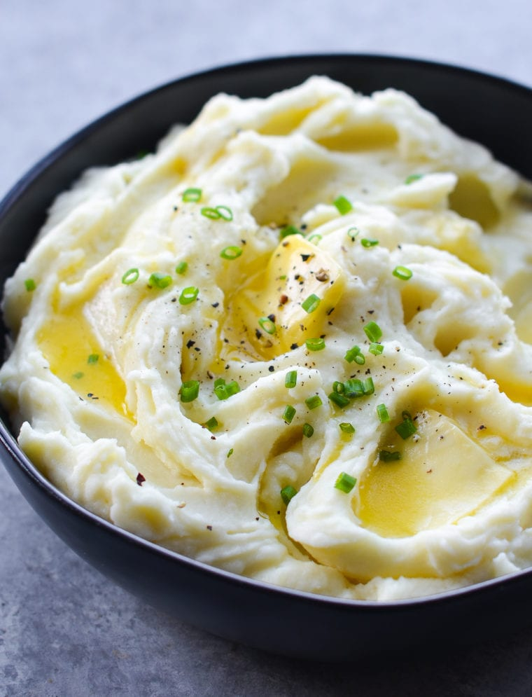

Mashed Potatoes

Description
A recipe for creamy, rich, and flavourful mashed potatoes. A classic side dish to any meal!
Ingredients
- 3 pounds russet potatoes, peeled and cut into large chunks
- 3 garlic cloves
- 1/2 cup unsalted butter
- 1 cup whole milk
- 2 teaspoon kosher salt
- Black pepper
- 1/2 cup sour cream
- Chopped fresh chives
Steps
- Place the potatoes and garlic in a pot of cold water, seasoned with 1 tablespoon kosher salt.
- Bring the water to a boil on high heat, then reduce and boil for 20 minutes, until the potatoes are tender. Drain and return to the pot.
- Mash the potatoes and garlic using a potato masher. As you mash, add the butter, milk, salt, and several dashes of black pepper. Mash until at desired consistency.
- Using a spatula, fold in the sour cream.
- Serve and garnish with a sprinkling of fresh chives.